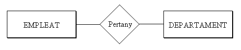
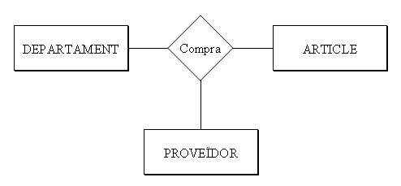
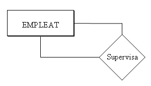
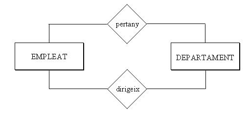

<!DOCTYPE html PUBLIC "-//W3C//DTD XHTML 1.0 Transitional//EN" "http://www.w3.org/TR/xhtml1/DTD/xhtml1-transitional.dtd">
<html lang="ca" xml:lang="ca" xmlns="http://www.w3.org/1999/xhtml">
<head>
<link rel="stylesheet" type="text/css" href="base.css" />
<link rel="stylesheet" type="text/css" href="content.css" />
<link rel="stylesheet" type="text/css" href="nav.css" />
<meta http-equiv="content-type" content="text/html;  charset=utf-8" />
<title>4.1 Relació | Bases de Dades </title>
<link rel="shortcut icon" href="favicon.ico" type="image/x-icon" />
<meta http-equiv="content-language" content="ca" />
<meta name="author" content="Àlvar Serrano Calduch" />
<link rel="license" type="text/html" href="http://creativecommons.org/licenses/by-nc-sa/3.0/" />
<meta name="generator" content="eXeLearning 2.6 - exelearning.net" />
<script type="text/javascript" src="exe_jquery.js"></script>
<script type="text/javascript" src="common_i18n.js"></script>
<script type="text/javascript" src="common.js"></script>
</head>
<body class="exe-web-site" id="exe-node-25"><script type="text/javascript">document.body.className+=" js"</script>
<div id="content">
<p id="skipNav"><a href="#main" class="sr-av">Omet navegació</a></p>
<div id="header" ><div id="headerContent">Bases de Dades</div></div>
<div id="siteNav">
<ul>
   <li><a href="index.html" class="daddy main-node">Tema 2: MODEL ENTITAT-RELACIÓ</a></li>
   <li><a href="objectius_i_coneixements_previs.html" class="no-ch">Objectius i coneixements previs</a></li>
   <li><a href="1_introducci.html" class="no-ch">1. Introducció</a></li>
   <li><a href="2_exemple.html" class="no-ch">2. Exemple</a></li>
   <li><a href="3_les_entitats_del_model_er.html" class="daddy">3. Les Entitats del Model E/R</a>
   <ul class="other-section">
      <li><a href="31_entitats.html" class="daddy">3.1 Entitats</a>
      <ul class="other-section">
         <li><a href="aplicaci_a_lexemple.html" class="no-ch">Aplicació a l'exemple</a></li>
      </ul>
      </li>
      <li><a href="32_atributs.html" class="daddy">3.2 Atributs</a>
      <ul class="other-section">
         <li><a href="aplicaci_a_lexemple0.html" class="no-ch">Aplicació a l'exemple</a></li>
      </ul>
      </li>
      <li><a href="33_dominis.html" class="no-ch">3.3 Dominis</a></li>
   </ul>
   </li>
   <li><a href="exercicis.html" class="no-ch">Exercicis</a></li>
   <li class="current-page-parent"><a href="4_les_relacions_del_model_er.html" class="current-page-parent daddy">4. Les Relacions del Model E/R</a>
   <ul>
      <li id="active"><a href="41_relaci.html" class="active daddy">4.1 Relació</a>
      <ul>
         <li><a href="aplicaci_a_lexemple1.html" class="no-ch">Aplicació a l'exemple</a></li>
      </ul>
      </li>
      <li><a href="42_atributs_de_relaci.html" class="daddy">4.2 Atributs de Relació</a>
      <ul class="other-section">
         <li><a href="aplicaci_a_lexemple2.html" class="no-ch">Aplicació a l'exemple</a></li>
      </ul>
      </li>
      <li><a href="43_tipus_de_relaci_o_cardinalitat.html" class="daddy">4.3 Tipus de Relació o Cardinalitat</a>
      <ul class="other-section">
         <li><a href="aplicaci_a_lexemple3.html" class="no-ch">Aplicació a l'exemple</a></li>
      </ul>
      </li>
   </ul>
   </li>
   <li><a href="exercicis0.html" class="no-ch">Exercicis</a></li>
   <li><a href="5_relacions_de_grau_major_que_dos.html" class="no-ch">5. Relacions de grau major que dos</a></li>
   <li><a href="6_model_er_ests.html" class="daddy">6. Model E/R Estès</a>
   <ul class="other-section">
      <li><a href="61_cardinalitat_mxima_i_mnima_participaci_total.html" class="daddy">6.1 Cardinalitat màxima i mínima. Participació total.</a>
      <ul class="other-section">
         <li><a href="aplicaci_a_lexemple4.html" class="no-ch">Aplicació a l'exemple</a></li>
      </ul>
      </li>
      <li><a href="62_entitats_dbils.html" class="no-ch">6.2 Entitats dèbils</a></li>
      <li><a href="63_generalitzaci_i_herncia.html" class="daddy">6.3 Generalització i herència</a>
      <ul class="other-section">
         <li><a href="aplicaci_a_lexemple5.html" class="no-ch">Aplicació a l'exemple</a></li>
      </ul>
      </li>
   </ul>
   </li>
   <li><a href="7_restriccions_externes.html" class="no-ch">7. Restriccions externes</a></li>
   <li><a href="exercicis1.html" class="no-ch">Exercicis</a></li>
   <li><a href="informaci_addicional.html" class="no-ch">Informació addicional</a></li>
   <li><a href="autoavaluaci.html" class="no-ch">Auto-avaluació</a></li>
</ul>
</div>
<div id='topPagination'>
<div class="pagination noprt">
<a href="4_les_relacions_del_model_er.html" class="prev"><span><span>&laquo; </span>Anterior</span></a> <span class="sep">| </span><a href="aplicaci_a_lexemple1.html" class="next"><span>Següent<span> &raquo;</span></span></a>
</div>
</div>
<div id="main-wrapper">
<div id="main"><a name="main"></a>
<div id="nodeDecoration"><h1 id="nodeTitle">4.1 Relació</h1></div>
<div class="iDevice_wrapper FreeTextIdevice" id="id20">
<div class="iDevice emphasis0">
<div id="ta20_1" class="block iDevice_content">

<p class="MsoBodyTextIndent" style="text-indent: 0cm">
&nbsp;
</p>
<p>
<b>RELACIÓ</b><a href="#_ftn1" title="_ftnref1" name="_ftnref1"><span class="MsoFootnoteReference"><span><!--[if !supportFootnotes]--><span class="MsoFootnoteReference"><span style="font-size: 12pt; font-family: 'Times New Roman'">[1]</span></span><!--[endif]--></span></span></a> és
una associació o correspondència entre entitats.
</p>
<p>
El <b>TIPUS DE RELACIÓ</b> serà l’estructura genèrica, l’associació entre dos
tipus d’entitat, i englobarà les <b>OCURRÈNCIES
DE RELACIÓ</b>, que relacionaran ocurrències de les entitats (Joan Peris
pertany al departament de Comptabilitat, Pilar Gomis al de Vendes, ...).
</p>
<p>
Representarem la relació per
un rombe, amb el nom de la relació a l’interior. Habitualment serà un verb que
descriu la relació entre les dues entitats. Unirem el rombe amb els rectangles
de les entitats per mig de línies.
</p>
<p>
Així tindrem:
</p>
<p>
<span>
<div style="text-align: center">

</div>
</span>
</p>
<p>
En una Relació poden
intervenir 2 entitats (Relació Binària), 3 entitats (ternària), o fins i tot
més. Aquest número serà el <b>GRAU </b>de
la relació.
</p>
<p>
Un exemple de relació
ternària seria:
</p>
<p>
<span>
<div style="text-align: center">

</div>
</span>
</p>
<p>
I una ocurrència d’aquesta
relació podria ser: Comptabilitat compra una calculadora a Distribucions
Garcia, S.L.
</p>
<p>
També es pot donar el cas
que només intervinga una entitat. Aleshores seria reflexiva o de grau 1. Per exemple, els
empleats tenen un supervisor, que també és un empleat de la companyia.
</p>
<p>
<span>
<div style="text-align: center">

</div>
</span>
</p>
<p>
Per últim, també es pot
donar el cas que dues entitats tinguen entre elles més d’una relació. En el
nostre exemple els empleats pertanyen als departaments. Però alguns empleats
dirigeixen els departaments, i aquesta és una relació distinta de l’anterior.
Per això convé posar el nom de la relació, per evitar confusions.
</p>
<p">
</p">
<p>
<span>
<div style="text-align: center">

</div>
</span>
</p>
<p>
&nbsp;
</p>
<blockquote>
	<b><u>Nota<o:p></o:p></u></b>
</blockquote>
<blockquote>
	<p class="MsoBodyTextIndent" style="text-indent: 0cm">
	Potser a mida que fem
	exercicis ens entre perea de posar nom a totes les relacions, sobretot perquè
	moltes estarà molt clar què signifiquen. Però haurem de posar sempre el nom en
	aquelles que puguen dur a confusió o aquelles que no està clar el seu significat.
	</p>
</blockquote>
<span>
<div style="text-align: center">
</div>
</span>
<p class="MsoBodyTextIndent" style="text-indent: 0cm">
<br />
</p>
<div>
<br clear="all" />
<hr align="left" size="1" width="33%" />
<!--[endif]-->
<div id="ftn1">
<p class="MsoFootnoteText">
<a href="#_ftnref1" title="_ftn1" name="_ftn1"><span class="MsoFootnoteReference"><span><!--[if !supportFootnotes]--><span class="MsoFootnoteReference"><span style="font-size: 10pt; font-family: 'Times New Roman'">[1]</span></span><!--[endif]--></span></span></a> Per a no confondre amb les
Relacions del Model Relacional, alguns autors prefereixen traduir el mot anglès
<i>Relationship</i> com <b>Interrelació</b> o <b>Vincle </b>en
compte de <b>Relació</b>
</p>
</div>
</div>

</div>
</div>
</div>
<div id='bottomPagination'>
<div class="pagination noprt">
<a href="4_les_relacions_del_model_er.html" class="prev"><span><span>&laquo; </span>Anterior</span></a> <span class="sep">| </span><a href="aplicaci_a_lexemple1.html" class="next"><span>Següent<span> &raquo;</span></span></a>
</div>
</div>
<div id="packageLicense" class="cc cc-by-nc-sa">
<p><span>Llicenciat sota la </span> <a rel="license" href="http://creativecommons.org/licenses/by-nc-sa/3.0/">Llicència Creative Commons Reconeixement NoComercial CompartirIgual 3.0</a></p>
</div>
</div>
</div>
</div>
</body></html>